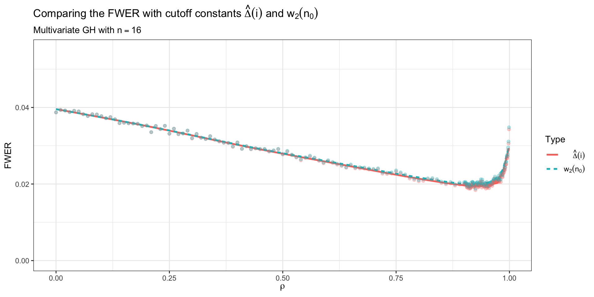

| i | n0 | w1 | G(w1) | w2 | G(w2) |
|---|---|---|---|---|---|
| 1 | 16 | 0.00313 | 0.02183 | 0.00716 | 0.04801 |
| 2 | 15 | 0.00333 | 0.02189 | 0.00761 | 0.04801 |
| 3 | 14 | 0.00357 | 0.02196 | 0.00813 | 0.04801 |
| 4 | 13 | 0.00385 | 0.02205 | 0.00872 | 0.04802 |
| 5 | 12 | 0.00417 | 0.02217 | 0.00940 | 0.04803 |
| 6 | 11 | 0.00455 | 0.02231 | 0.01019 | 0.04804 |
| 7 | 10 | 0.00500 | 0.02249 | 0.01112 | 0.04806 |
| 8 | 9 | 0.00556 | 0.02272 | 0.01222 | 0.04810 |
| 9 | 8 | 0.00625 | 0.02303 | 0.01357 | 0.04814 |
| 10 | 7 | 0.00714 | 0.02345 | 0.01523 | 0.04820 |
| 11 | 6 | 0.00833 | 0.02403 | 0.01734 | 0.04830 |
| 12 | 5 | 0.01000 | 0.02488 | 0.02009 | 0.04844 |
| 13 | 4 | 0.01250 | 0.02623 | 0.02382 | 0.04865 |
| 14 | 3 | 0.01667 | 0.02861 | 0.02913 | 0.04898 |
| 15 | 2 | 0.02500 | 0.03364 | 0.03715 | 0.04949 |
| 16 | 1 | 0.05000 | 0.05000 | 0.05000 | 0.05000 |
On FWER Cutoffs in a Pairwise Exchangeable Setting
ISI WSC 2023
Thomas Fung & Eugene Seneta
Macquarie University & The University of Sydney
IASC-ARS 2023 @ Macquarie University, Sydney, Australia
The 12th conference for the Asian Regional Section (ARS) of the International Association for Statistical Computing (IASC) will be held on 6-8 Dec 2023 at Sydney, Australia.
Conference website: https://iascars2023.netlify.app
We are currently looking for invited session proposal.
And Submissions can be made by e-mail to iascars2023@gmail.com.
Please forward this message to your colleagues and encourage them to organise the invited sessions for IASC-ARS 2023.

Roadmap
- Familywise Error Rate & Stepdown Procedure
- Introducing some benchmark cutoffs
- Comparing Cutoffs
Fung, T. and Seneta, E. (2023) ‘On Familywise Error Rate Cutoffs under Pairwise Exchangeability’, Methodology and Computing in Applied Probability, 25(2), p. 59. Available at: https://doi.org/10.1007/s11009-023-10018-1.

Familywise Error Rate & Stepdown Procedure
Familywise Error Rate
- Consider the multiple test problem when there are \(n\) hypotheses \(H_1, H_2, \ldots, H_n\).
Familywise Error Rate
- Consider the multiple test problem when there are \(n\) hypotheses \(H_1, H_2, \ldots, H_n\).
Familywise Error Rate
- Consider the multiple test problem when there are \(n\) hypotheses \(H_1, H_2, \ldots, H_n\).
- And corresponding
- test statistics \(X_1, X_2, \ldots, X_n\) (assuming they are from a continuous distribution);
- P-values \(R_1, R_2, \ldots R_n\).
Familywise Error Rate
- Consider the multiple test problem when there are \(n\) hypotheses \(H_1, H_2, \ldots, H_n\).
- And corresponding
- test statistics \(X_1, X_2, \ldots, X_n\) (assuming they are from a continuous distribution);
- P-values \(R_1, R_2, \ldots R_n\).
Strongly Controlled FWE
- Suppose that in such a multiple test procedure the property: \[ \text{Pr}(H_s, s \in I_{m},\text{are accepted}| H_s, s \in I_{m} \, \text{are true}) \geq 1- \alpha \qquad(1)\] holds for pre-specified size of test \(\alpha\) (familywise error rate: FWER) for every \(I_{m}\), where \(I_{m}\) is any non-null subset of \(\{1,2, \ldots, n \}\), for every \(m = 1,2, \ldots, n.\)
Stepdown Procedure
- Let
- \(R_{(1)}, R_{(2)}, \ldots, R_{(n)}\) be the ordered P-values; and
- \(H_{(1)}, H_{(2)}, \ldots, H_{(n)}\) be the corresponding hypothesis;
- \(\Delta(i)\), \(1 \leq i \leq n\) be a strictly increasing sequence of constants (aka cutoffs), with \(0 < \Delta(i) < 1.\)
- A step-down procedure begins by testing \[ R_{(1)}< \Delta(1). \]
- If so, reject \(H_{(1)}\) and go on to test if \(R_{(2)} < \Delta(2).\)
- If not, accept all hypotheses.
Stepdown Procedure (cont.)
- In general, at step j the remaining hypotheses are \[H_{(j)}, H_{(j+1)}, \ldots, H_{(n)},\] and the inequality next to be checked is \[R_{(j)}< \Delta(j).\]
- If it holds, reject \(H_{(j)}\) and continue.
- Otherwise accept \(H_{(j)}, H_{(j+1)}, \ldots , H_{(n)}\).
- The process may continue until a decision is made on the basis of whether \[ R_{(n)}< \Delta(n). \]
Introducing some benchmark cutoffs
The Original
- The step-down procedure of Holm (1979) uses the set of constants \[ \bar{\Delta(i)} =\frac{\alpha}{n_0}, \qquad(2)\] where \[n_0 = n-i+1 \quad \& \quad 1 \leq i \leq n,\] and Holm proved that with these constants the FWE is strongly controlled.
With Exchangeability
What is exchangeability?
\((X_i, X_j)\), \(i \neq j, i,j \in I_{m}\) are exchangeable, (so that \((R_i, R_j)\) are also) if their joint bivariate distribution is the same for each such \(I_{m}\), where \(I_{m}, m \geq 2\) is the index set of assumed true hypotheses.
- Note that the marginal distribution of each \(R_i, i \in I_{m}, m \geq 1\) is \(U(0,1)\).
- We introduced the notation \[H(u) = Pr(R_1 \leq u, R_2 \leq u) = Pr( \max (R_1, R_2) \leq u ), \quad u \in (0,1),\] so that \(H(u), 0 < u < 1\), is a cdf.
With Exchangeability (cont.)
- Seneta and Chen (1997), Sections 4, 5 showed that with exchangeability the critical cutoff constants: \[
\tilde{\Delta}\left(i\right) = \frac{\alpha + (n_0 -1) H\left(\frac{\alpha}{n_0}\right)}{n_0},
\qquad(3)\] are
- monotonic increasing with \(i\) (& decreasing with increasing \(n_0\)), and
- the step down procedure based on them strongly controls the FWE.
- Moreover the step-down procedure with \(\tilde{\Delta}\left(i\right)\) provides tighter control on the FWE than Holm’s \(\bar{\Delta(i)}\) since \[ \tilde{\Delta}(i) > \bar{\Delta(i)} = \frac{\alpha}{n_0}, \quad 1 \leq i \leq n-1, \quad \&\quad \tilde{\Delta}(n) = \bar{\Delta(n)} = \alpha. \]
How would one show a set of cutoffs to be able to strongly control of FWE?
- Any monotonic sequence \(w_1(n_0), n_0 = 1, 2, \ldots, n\) satisfying \[ w_1(1) = \alpha; \quad 0 < w_1(n_0) < \alpha;\quad w_1(n_0) < w_1(n_0 -1); \quad G_{n_0}(w_1(n_0)) < \alpha, \qquad(4)\] where \(G_{n_0}(u)\) is given by \[ G_{n_0}(u) = n_0 u - (n_0 -1) H(u), \, \, 0 < u < 1, \qquad(5)\]
- We set \[ \Delta(i)= w_1(n_0), \quad i=1,2, \ldots , n.\]
- The cutoffs \(\tilde{\Delta}\left(i\right)\) & \(\bar{\Delta(i)}\) satisfy the description of such a sequence \(w_1(n_0)\), \(n_0 =1\), \(2\), \(\ldots\), \(n\).
With Convexity
Sarkar, Fu, and Guo (2016), motivated by Seneta and Chen (2005)’s, make a substantial improvement on (3), i.e. \({\tilde \Delta}(i)\).
They make the overarching assumption: \[ H(u) \text{ is convex in } u \in (0,1). \]
Convexity
A function is convex if and only if for all \(0 \leq t \leq 1\) and all \(x_{1},x_{2}\) in its convex subset \(X\), \[f\left(tx_{1}+(1-t)x_{2}\right)\leq tf\left(x_{1}\right)+(1-t)f\left(x_{2}\right)\]
- Consequently they show that the monotonic increasing cut-offs: \[ \hat{\Delta}(i) = \frac{\alpha^2/ n_0}{G_{n_0}(\alpha/n_0)}, \qquad(6)\] where \(G_{n_0}(u) = n_0 u - (n_0 -1) H(u), 0 < u < 1\) is defined by (5) and \({\hat \Delta}(i)\) provides a tighter control on the FWE than \({\tilde \Delta}(n)\).
Iterating the cutoffs
- Given \(\bar{\Delta(i)} = \frac{\alpha}{n_0}\), we can arrange (6) so that \[ \hat{\Delta}(i) = \frac{\alpha^2/ n_0}{G_{n_0}(\alpha/n_0)} = \frac{\alpha \bar{\Delta(i)}}{G_{n_0}(\bar{\Delta(i)})} \]
- We can generalise this and define a transformer function \[ w_2(n_0) \overset{def}{=} \frac{\alpha w_1(n_0)}{G_{n_0}(w_1(n_0))}, \qquad(7)\] where \(w_1(n_0), n_0 = 1, 2, \ldots, n\) is a set of monotonic sequence.
Theorem 1 (FWER on iterative cutoffs)
Let \(\alpha, 0 < \alpha <1,\) be a fixed constant.
Then \[ w_2(1) = \alpha; \] and for \(n_0 \geq 2\), \[ 0 < w_1(n_0)< w_2(n_0) < \alpha. \qquad(8)\]
If we assume \(H(u)/u \uparrow, u \uparrow\), then for \(n_0 \geq 2\), \[ w_2(n_0) < w_2(n_0 -1), \, \, G_{n_0}(w_2(n_0)) < \alpha. \qquad(9)\] so that, from (4) & (5), the cutoffs \(w_2(n_0)\) strongly control the FWE.
If there is another set of monotonic sequence \(w^{*}(n_0)\) that \[ w_1^{*}(n_0) > w_1(n_0), \quad n_{0} \geq 2 \] and \(w_1^{*}(n_0)\) satisfies the same conditions (4) & (5) as \(w_1(n_0)\), and if \(H(u)/u \uparrow, u \uparrow\), then \[ w_2^{*}(n_0) > w_2(n_0), \, n_0 \geq 2. \quad \quad \Box \qquad(10)\]
A quick application of Theorem 1
- Since, as we have noted from (3), \[ w_{1}^{*}(n_0)={\hat \Delta}(i) \] satisfies the conditions of the theorem, we conclude that \[w_2^{*}(n_0) > \hat{ \Delta}(i),\] and the cutoffs \(w_2^{*}(n_0)\) provide tighter control on FWE than \(\hat{\Delta}(i)\).
Some observation from Theorem 1
- In both Sarkar, Fu, and Guo (2016) and in its Supplementary Materials, much attention is focussed on the problem of verifying the convexity assumption of \(H(u)\), \(0 < u < 1\).
- According to the Theorem above, the conditions for the copula \(H(u)\), to obtain the same conclusion, are milder.
- Further, the validity of (9) and (10) can be checked directly from the values of \(w_2(n_0)\), and the values of {\(w_i(n_0), w_i^{*}(n_0), i=1,2\)} respectively in a testing setting, without knowledge such as \(H(u)/u \uparrow, u \uparrow\), which removes the dependence on such a condition in statistical application.
- We make use of this fact later, in an example when the condition \(H(u)/u \uparrow, u \uparrow\) cannot be analytically verified.
Comparing Cutoffs
Comparing Cutoffs
For comparisons of the differential effects of various cutoffs, we use the familywise error rate (FWER) as a function of \(\rho\) as the means of comparison.
This is in general defined as \[ \text{Pr}(\text{Reject at least one } H_i, i= 1,2, \ldots , n| H_i, i= 1,2, \ldots , n \ \text{are all true}).\]
Thus for the stepdown procedure \[ \begin{aligned} \text{FWER} &= \text{Pr}(R_{(1)} < \Delta (1)| H_i, i= 1,2, \ldots , n \ \text{are all true}) \\ &= \text{Pr}(\min_{i=1,2, \ldots , n}X_i < F_X^{-1}(\Delta (1))| H_i, i= 1,2, \ldots , n \ \text{are all true}) \end{aligned} \qquad(11)\] for fixed \(j=1,2\), in terms of sample values \(X_i, i=1,2, \ldots , n\), where \(F_X(x)\) is the marginal cdf of \(X_i\).
The expression (11) may be estimated from repeated simulation of the sample \(X_i, i=1,2, \ldots , n\), once \(F_X^{-1}(\Delta (1)))\) is numerically calculated.
The Generalized Hyperbolic Distribution
- The multivariate skew GH distribution, \(GH(0,R_n,\boldsymbol{\theta},p,a,b)\) which we take as the joint distribution of our test-statistics \(\textbf{X} = (X_1, X_2, \ldots ,X_n)^{\top}\) to have is defined by its mean-variance mixing representation as \[ \textbf{X} = \boldsymbol{\mu}+ \boldsymbol{\theta} W + \sqrt{W}\textbf{Z} \qquad(12)\] where \(\boldsymbol{\mu} = (\mu_1, \mu_2, \ldots ,\mu_n)^{\top}\), \(\boldsymbol{\theta} = (\theta_1,\theta_2, \ldots, \theta_n)^{\top}\), and \(W \sim GIG(p,a,b)\) is independently distributed of \(\textbf{Z} \sim N(0, R_n)\).
- Here \(R_n =(1-\rho) \boldsymbol{I}_n + \rho 1_n 1_n^{\top}\), with \(-1<\rho<1\), so that \(R_2 = \left( \begin{smallmatrix} 1 & & \rho \\ \\ \rho & & 1\end{smallmatrix}\right)\).
- We assume that the random variable \(W\) has a (univariate) Generalised Inverse Gaussian (GIG) distribution, denoted by \(GIG(p,a,b)\), that is, it has density \[ \begin{aligned} f_{GIG}(w) =& \frac{1}{2\overline{K}_{p}(a,b)}w^{p-1}\exp(-\frac{1}{2}(a^2w^{-1}+b^2w)), \quad w>0; \\ =& 0, \quad \text{otherwise;} \end{aligned} \qquad(13)\] where \[ \overline{K}_{p}(a,b) = \begin{cases} (\frac{a}{b})^{p}K_{p}(ab), &\text{ $p \in \mathbb{R}$, if $a,b >0$;}\\ b^{-2p}\Gamma(p)2^{p-1}, &\text{ $p ,b>0$, if $a=0$;}\\ a^{2p}\Gamma(-p)2^{-p-1}, &\text{ $a>0$ and $p <0$, if $b=0$,} \end{cases} \qquad(14)\]
- Here \(K_{p}(\omega), \omega >0\), is the modified Bessel function of the second kind (Erdélyi et al. (1954)) with index \(p \in \mathbb{R}\).
The Generalized Hyperbolic Distribution. Tests. (cont.)
We take for, \(i=1,2,\ldots , n\), our \(i\)th null hypothesis as: \(H_i: \mu_i = \theta_i = 0\), so that when all \(H_i\) are true, \[ \textbf{X} = \sqrt{W}\textbf{Z}, \qquad(15)\] and similarly for any subset of indices \(\{1,2, \ldots, n \},\) so that exchangeability holds, and the other assumptions discussed under the Exchangeability Context hold.
Then the distribution functions of the \(X_i\) are the same: \(F_i(u) = F_1(u)\).
The marginal density of \(X_1\) is then given by \[ f_{X_1}(x) = \frac{\overline{K}_{p-1/2}((x^2 +a^2)^{1/2}, b)}{{\sqrt{2\pi}\, {\overline{K}}_p(a,b)}}, \quad x \in \mathbb{R}. \qquad(16)\]
The case \(b=0\) of (15) encompasses the symmetric multivariate \(t\)-distribution, which has been studied as a central example in Sarkar, Fu, and Guo (2016).
The Generalized Hyperbolic Distribution. Tests. (cont.)
We therefore take up an example to illustrate the case \(b>0\).
The Variance Gamma (VG) distribution, which is a special case, when \(a=0\), \(b = \sqrt{\frac{2}{\nu}}\), \(p=\frac{1}{2}\), is important in financial mathematics modelling.
- The case \(b>0\) has been studied extensively in the bivariate case (\(n=2\)), by Fung and Seneta (2016), and this bivariate case is central, as we have seen, to the role of the copula \(H(u)\) in our exchangeable setting.
The only issue is that we have not been able to establish the general property \(H(u)/u \uparrow\) as \(u \uparrow\) in the exchangeable setting.
Simulation
Setting
We plotted the error rate in the multivariate GH setting with \[ a = 0, p = 4, b = 0.5, \alpha = 0.05, n = 16 \] for various values of common correlation \(\rho\) and two sets of cutoff constants (from Sarkar, Fu, and Guo (2016) and by iterating Seneta and Chen (1997)) \[ \begin{aligned} \hat{\Delta}(i) & = \frac{\alpha^2/ n_0}{G_{n_0}(\alpha/n_0)}, \\ w_2(n_0) & = \frac{\alpha w_1(n_0)}{G_{n_0}(w_1(n_0))}, \quad w_1(n_0)= \tilde{\Delta}\left(i\right) = \frac{\alpha + (n_0 -1) H\left(\frac{\alpha}{n_0}\right)}{n_0} \end{aligned} \]
100,000 independent replications were used in all simulations.
The smoothed line is provided by a GAM fit.
Simulation Results
- Given that we haven’t been able to analytically verified that \(H(u)/u \uparrow\), as \(u \uparrow\), for the exchangable GH case, we have to check the conditions numerically to ensure the iterative cutoffs \(w_2(n_0)\) are strongly controlling FWER.
Simulation Results (cont.)
Figure 1: Comparing the familywise error rate with cutoff constants \(\hat{\Delta}(i)\) and \(w_2(n_0)\)
- From Figure 1, we can see \(w_2(n_0)\) provided tighter control of FWE for high values of \(\rho\) than \(\hat{\Delta}(i)\) but performance was indistinguishable otherwise.
Thanks!
Thomas Fung
References
School of Mathematical and Physical Sciences, Macquarie University
Erdélyi, A., W. Magnus, F. Oberhettinger, and F. G. Tricomi. 1954. Bateman Manuscript Project: Tables of Integral Transform. Vol. 2. New York: McGraw-Hill.
Fung, Thomas, and Eugene Seneta. 2016. “Tail Asymptotics for the Bivariate Skew Normal.” Journal of Multivariate Analysis 144 (February): 129–38. https://doi.org/10.1016/j.jmva.2015.11.002.
Holm, Sture. 1979. “A Simple Sequentially Rejective Multiple Test Procedure.” Scandinavian Journal of Statistics 6 (2): 65–70. https://www.jstor.org/stable/4615733.
Sarkar, Sanat K., and Chung-Kuei Chang. 1997. “The Simes Method for Multiple Hypothesis Testing With Positively Dependent Test Statistics.” Journal of the American Statistical Association 92 (440): 1601–8. https://doi.org/10.2307/2965431.
Sarkar, Sanat K., Yiyong Fu, and Wenge Guo. 2016. “Improving Holm’s Procedure Using Pairwise Dependencies.” Biometrika 103 (1): 237–43. https://doi.org/10.1093/biomet/asv063.
Seneta, Eugene, and John T. Chen. 2005. “Simple Stepwise Tests of Hypotheses and Multiple Comparisons.” International Statistical Review / Revue Internationale de Statistique 73 (1): 21–34. https://www.jstor.org/stable/25472638.
Seneta, Eugene, and Tuhao Chen. 1997. “A Sequentially Rejective Test Procedure.” Theory of Stochastic Processes 3 (19): 393–402. https://doi.org/https://www.maths.usyd.edu.au/u/eseneta/SenetaChen(1997).pdf.